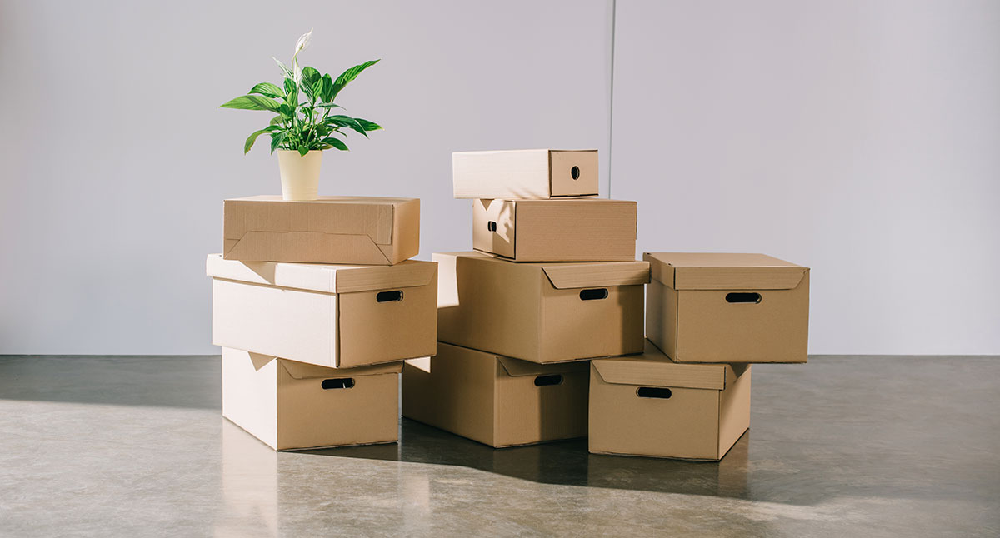

Impacto de las compras online en el medio ambiente
El comercio en línea está en auge. En 2020, hubo 256 millones de compradores digitales solo en EE. UU., y se espera que este número aumente en
casi 22 millones para 2024. Las personas compran en línea por su conveniencia y para obtener información sobre productos y marcas amigables con
el medio ambiente. El 73% de los consumidores están dispuestos a cambiar sus hábitos de compra para reducir el impacto ambiental.
A continuación, exploraremos cómo el comercio en línea se relaciona con la sostenibilidad y su impacto en el medio ambiente.
Comprar en línea brinda comodidad, pero también conlleva consecuencias ambientales significativas.Aquí exponemos estas implicaciones:
1-Emisiones de Gases Contaminantes:
Los productos adquiridos en línea requieren ser transportados desde su lugar de origen hasta nuestro hogar, utilizando aviones, barcos y furgonetas, generando emisiones de CO2, NOx y partículas finas.
2-Generación de Residuos:
Los envases de cartón, plástico, papel y otros materiales utilizados en el embalaje de productos comprados en línea contribuyen a la generación de residuos.En 2019, los materiales de embalaje alcanzaron las 9,4 millones de toneladas, según un informe de Greenpeace China y otras organizaciones. Además, en muchos casos, estos materiales no se reutilizan en las devoluciones, lo que resulta en la compra de nuevos productos y más residuos.
3-Embalaje Adicional:
Las empresas a menudo añaden elementos decorativos o llamativos al embalaje de las compras en línea para promocionar su marca  y atraer a los consumidores. Estos materiales adicionales contribuyen aún más a la generación de residuos.
4-Envíos Rápidos e Ineficientes:
Algunas empresas ofrecen envíos inmediatos, incluso en el mismo día, lo que a menudo resulta en una logística de entrega menos eficiente y un mayor número de vehículos en la carretera, aumentando la huella de carbono. La entrega rápida consume tres veces más energía que la entrega tradicional.
5-Devoluciones y su Impacto:
Aunque las devoluciones en las compras en línea son convenientes para los consumidores, tienen un costo ambiental. Implican el transporte adicional de los productos de vuelta al almacén, lo que genera más emisiones y residuos, especialmente si no se reutiliza el mismo embalaje. Es esencial considerar estos impactos ambientales al hacer compras en línea y buscar formas de minimizarlos, como optar por envases sostenibles y reducir las devoluciones innecesarias.Pros
- Conveniencia:
- Comprar en línea te permite hacerlo desde la comodidad de tu hogar, en cualquier momento del día.
- Variedad de Productos
- Puedes comparar fácilmente precios y encontrar las mejores ofertas en línea con la ayuda de motores de búsqueda y comparación de precios.
- Comparación de Precios
- Puedes comparar fácilmente precios y encontrar las mejores ofertas en línea con la ayuda de motores de búsqueda y comparación de precios.
- Sin Límites Geográficos
- Puedes comprar productos de todo el mundo sin importar tu ubicación geográfica.
Contras
- Costos de Envío
- Los costos de envío pueden aumentar significativamente el precio final de un producto, especialmente si es importado o de gran tamaño.
- Puede variar según el país de destino.
- Espera de Entrega
- Tienes que esperar para recibir tus productos, lo que puede ser inconveniente si necesitas algo con urgencia.
- Seguridad en Línea
- Existe el riesgo de robo de datos y fraude en línea, por lo que debes ser cauteloso al proporcionar información personal y financiera.
- Devoluciones y Reembolsos
- A veces, devolver un producto comprado en línea puede ser complicado y llevar tiempo, especialmente si la tienda está en otro país.
Porcentaje de compras online según el sector |
|
|---|---|
| Rama de Actividad | Porcentaje de Volumen de Negocio |
| Electrónica y Tecnología | 25% |
| Moda y Ropa | 20% |
| Alimentación y Bebidas | 15% |
| Hogar y Decoración | 10% |
| Libros y Entretenimiento | 8% |
| Deportes y Actividades al Aire Libre | 7% |
| Juguetes y Juegos | 5% |
| Belleza y Cuidado Personal | 4% |
| Muebles y Mobiliario | 3% |
| Automoción y Accesorios | 3% |